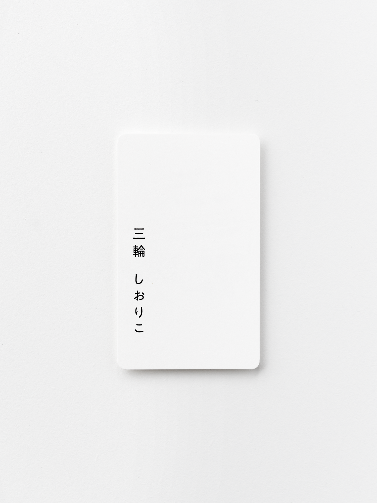
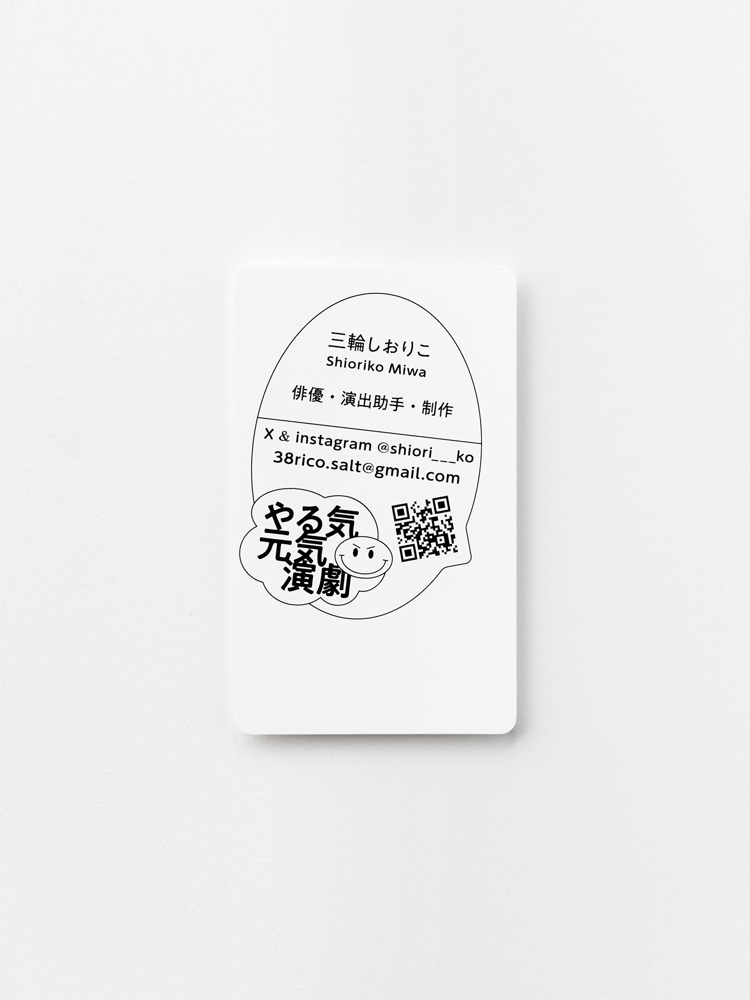

Business Card for Shioriko Miwa (2026)
俳優、演出助手、制作として活動する三輪しおりこ氏の名刺を制作させていただきました。後から点字を施したいというご要望があったため、表面は点字が名前に被らないよう、中央を避けたレイアウトとしています。 やる気 元気 演劇 (`・ω・´) ！ いいね ！ 笑 今後の活動のお供として、この名刺をそっと身に携えていただけることを、嬉しく思います。
＊CL. 三輪 しおりこ / Shioriko Miwa